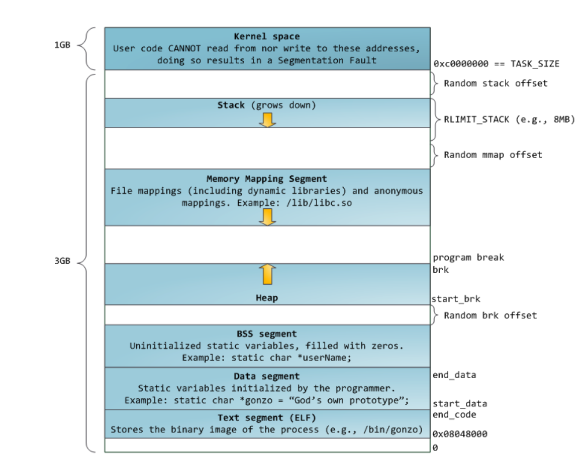
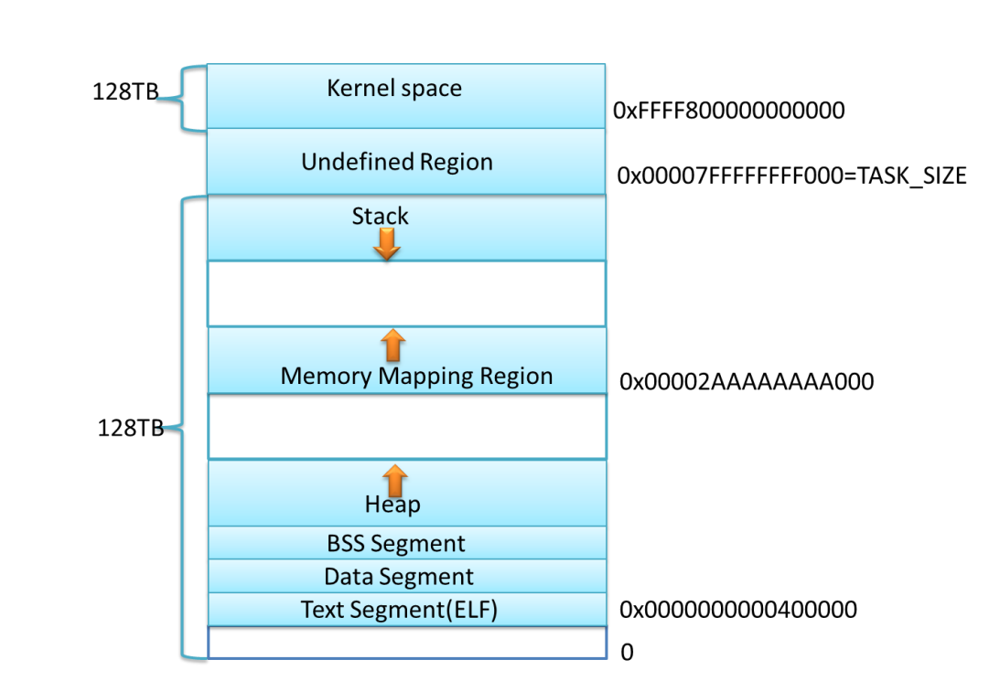
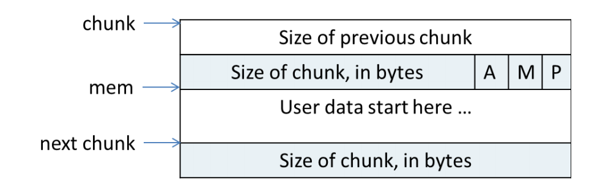
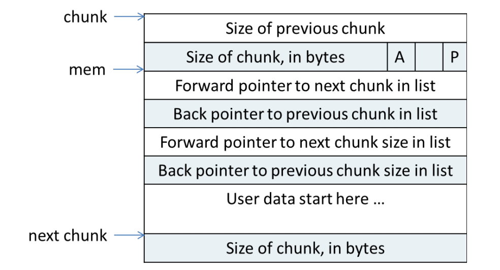
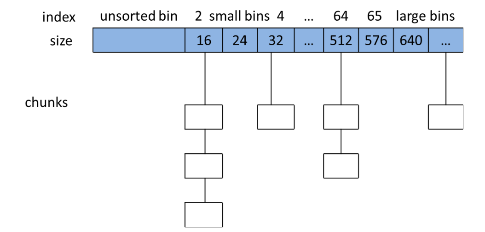

精读《glibc内存管理ptmalloc源代码分析》
前言:最近在学unlink和各种堆相关的攻击技巧
但是因为对堆的分配啥的不怎么熟悉，导致很头疼
这次来好好学习下，而且这也是Atum大佬的推荐阅读。
32位内存布局

可以看到总共4G内存，最上面1个G是内核空间的。
从上往下就是1G内核，栈，mmap映射，堆区，bss段，data段和text段。
堆和mmap映射区域相对增长，还有就是栈有个最大限制。
64位内存布局

因为在64位下有足够的内存空间。mmap和栈就相对增长了。
堆区因为空间足够，不太可能会往上覆盖到mmap映射区，至于其他，和32位差不多。
Chunk

用户所请求的空间在ptmalloc都会用一个Chunk表示。
可以看到上图是一个没有被free的Chunk
第一个是前一个(空闲)Chunk的大小
第二个是当前Chunk的大小，第三位代表了不同的意思
这边主要看P位，P位表示前一个chunk是否在使用
如果是1则在，那么第一个表示前一个chunk大小的四字节就无效。
如果为0，则表示前一个chunk空闲，这时表示的size就有效了。
第一个分配的chunk的p位总是为1.

上图是一个被free后的chunk
可以看到M位不存在。
还有就是多了4个指针(看情况)
一个是fd，指向后一个空闲的chunk
还有就是bd，指向前一个空闲的chunk
下面还有俩个分别代表大小
但是这只有large bin才会有。
一般都是2个指针。
还可以看到，下一个chunk的previous size没了
其实这是因为它正在使用中，那四个字节本来就没有用，就可以直接给上一个chunk申请的空间了。
这便是chunk的空间复用。
chunk空间复用
可以看到当chunk空闲时，至少需要16个字节空间来放那四个指针。
在使用时呢，首先有俩个指针8字节，再加上自己申请的，再减去4字节，为什么要减去4字节，其实是因为占用了下一个chunk的previous size的那四个字节。
所以此时chunk空间大小为
in_use_size = (用户请求大小+ 8 - 4 ) align to 8B
综上可以看出，chunk的大小为max(in_use_size, 16)。
这就是用户请求分配时，ptmalloc实际分配的大小。
bins

ptmalloc会统一管理被用户free掉的chunk，如上图所示。
一共维护了128个bin，并用数组来存储。
bin中的chunk被双向链表链接。
可以看到第一个为unsorted bin
然后就是small bins
small bins每个之间相差8字节。
里面的chunk被双向链表链接，其中用户申请时，small bins都是从尾补开始的，
而用户释放的都被连到了链表头部。
还有一个就是large bins，没什么好说的。
当空闲的chunk被链接到bin中的时候，都会把这chunk下一个的P位置为0，以表示前一个空闲。
他还会检查次chunk前一个chunk是否空闲，如果是则会合并俩个chunk，并把它放到unsorted bin中。
当然不是所有都会放到unsorted bin中，还会根据大小选择是否放入fast bins
fast bins
当大小小于64字节的chunk被释放后首先会放入fast bins中，在此时其下一个P位不会被置0.
以便快速分配。当需要给用户分配的大小小于64字节时，ptmalloc会先在fast bins中寻找，
如果没有则将相邻的chunk合并后放入unsorted bin，再在unsorted bin中寻找。
unsorted bin
当用户释放的chunk大于64字节或者fast bins中的chunk合并后，都会放进unsorted bin中。当fast bins中找不到用户所需求的chunk时，
ptmalloc则会寻找unsorted bin，如果没有，再将unsorted bin中的chunk放进bins中，再在bins中寻找。
说到底，fast bins 和 unsorted bin其实就是为了提高分配速度而存在的。
//todo